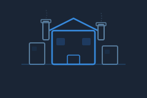

<ion-header [translucent]="true">
  <ion-toolbar>
    <ion-buttons slot="start">
      <ion-menu-button autoHide="false">
        <ion-button size="large" (click)="ToggleMenu()">
          <ion-icon name="menu-outline" slot="icon-only"></ion-icon>
        </ion-button>
      </ion-menu-button>
    </ion-buttons>
    <ion-title>
      <app-logo></app-logo>
    </ion-title>
  </ion-toolbar>
</ion-header>

<ion-content class="ion-padding">
  <ion-breadcrumbs>
    <ion-breadcrumb [routerLink]="['/park', parkId]" [state]="{ parkName: parkName }">
      {{ parkName }}
    </ion-breadcrumb>
  </ion-breadcrumbs>

  <div class="park-toolbar">
    <div class="park-actions">
      <ion-button fill="clear" size="small" shape="round" [routerLink]="['/park', parkId, 'parks-users']"
        [state]="{ park_name: parkName }"
        style="--border-radius: 50%; --padding-start: 6px; --padding-end: 6px; position: relative;">
        <ion-icon slot="icon-only" name="people-outline"></ion-icon>
        <!--ion-badge color="primary" class="action-badge" *ngIf="park?.user_count > 0">
          {{ park?.user_count }}
        </ion-badge-->
      </ion-button>

      <ion-button fill="clear" size="small" shape="round" (click)="OpenSettings()"
        style="--border-radius: 50%; --padding-start: 6px; --padding-end: 6px;">
        <ion-icon slot="icon-only" name="settings-outline"></ion-icon>
      </ion-button>
    </div>
    <div class="view-toggle">
      <ion-button fill="clear" size="small" [class.active]="viewMode === 'list'" (click)="viewMode = 'list'">
        <ion-icon slot="icon-only" name="list-outline"></ion-icon>
      </ion-button>
      <ion-button fill="clear" size="small" [class.active]="viewMode === 'grid'" (click)="viewMode = 'grid'">
        <ion-icon slot="icon-only" name="grid-outline"></ion-icon>
      </ion-button>
    </div>
  </div>

  <!-- ─── VISTA LISTA ───────────────────────────────────────── -->
  <ion-list *ngIf="viewMode === 'list'">
    <ion-item *ngFor="let plant of plants" lines="inset" button
      [routerLink]="['/park', parkId, 'plant', plant.plant_id]"
      [state]="{ plantName: plant.name, parkName: parkName  }">
      <div slot="start" class="plant-icon-wrap">
        <ion-icon name="cube-outline"></ion-icon>
      </div>
      <ion-label>
        <h2>{{ plant.name }}</h2>
        <p>{{ plant.description || 'Sin descripción' }}</p>
      </ion-label>
      <ion-badge slot="end" [color]="plant.is_active ? 'success' : 'medium'">
        {{ plant.is_active ? 'Activa' : 'Inactiva' }}
      </ion-badge>
    </ion-item>

    <ion-item *ngIf="plants.length === 0" lines="none">
      <ion-label color="medium" class="ion-text-center">
        <p>Sin plantas configuradas</p>
      </ion-label>
    </ion-item>
  </ion-list>

  <!-- ─── VISTA GRID ────────────────────────────────────────── -->
  <ion-grid *ngIf="viewMode === 'grid'" class="grid-view">
    <ion-row>
      <ion-col size="12" size-sm="6" size-md="4" size-lg="3" *ngFor="let plant of plants">
        <ion-card class="device-card" button [routerLink]="['/park', parkId, 'plant', plant.plant_id]"
          [state]="{ plantName: plant.name, parkName: parkName }">

          <ion-card-header>
            
          </ion-card-header>

          <ion-card-content>
            <div class="device-card-header">
              <div>
                <p class="card-title">{{ plant.name }}</p>
                <p class="card-sub">{{ plant.description || 'Sin descripción' }}</p>
              </div>
              <ion-badge [color]="plant.is_active ? 'success' : 'medium'">
                {{ plant.is_active ? 'Activa' : 'Inactiva' }}
              </ion-badge>
            </div>
            <div class="plant-meta" *ngIf="plant.address">
              <ion-icon name="location-outline"></ion-icon>
              <span>{{ plant.address }}</span>
            </div>
          </ion-card-content>

        </ion-card>
      </ion-col>
    </ion-row>
  </ion-grid>

</ion-content>